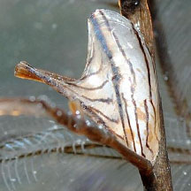
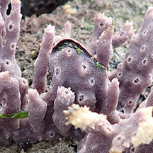

Winged
oysters
Family Pteriidae
updated
May 2020
Where
seen? These strangely shaped clams grow attached to other animals like sea
fans and sponges, as well as mangrove trees.
What are winged oysters? Winged
oysters belong to the Family Pteriidae.
Features: 1-8cm. Unlike
other bivalves, they have comb-like teeth in the hinge, a feature
of this family. They stick to hard surfaces by byssus threads.
Human uses: Some species are collected
for food by coastal populations and used as a substitute for true
oysters. The oysters that produce commercial precious pearls belong
to this family, but those seen on our shores do not produce pearls. |
|

Electroma physoides
Sisters Island, Dec 12
Photo shared by Loh Kok Sheng on flickr. |

Sponge finger oyster in a sponge.
Changi, Jan 20
|
| Some Winged
oysters on Singapore shores |
Family
Pteriidae recorded for Singapore
from
Tan Siong Kiat and Henrietta P. M. Woo, 2010 Preliminary Checklist
of The Molluscs of Singapore.
^from WORMS
+from Singapore Biodiversity Records
| |
Family
Pteriidae awaiting identification |
| |
Electroma
ovata
Electroma physoides
^Isognomon previously in Family Isognomonidae
Isognomon
ephippium (Leaf oyster)
Isognomon isognomum (Elongated toothed oyster)
Isognomon legumen
Isognomon perna
+Isognomon spathulatus (Mangrove leaf-oyster)
Pinctada albina sugillata
Pinctada fucata
Pinctada margaritifera
Pinctada radiata
Pteria castanea
Pteria inquinata
Pteria macroptera
Pteria penguin
Vulsella vulsella (Sponge finger
oysters) ^Previously in Family Malleidae |
|
|
Links
- Family Pteriidae
in
the Bivalves section by J.M. Poutiers in the FAO Species Identification
Guide for Fishery Purposes: The Living Marine Resources of the
Western Central Pacific Volume
1: Seaweeds, corals, bivalves and gastropods on the Food and
Agriculture Organization of the United Nations (FAO) website.
References
- Chan Sow-Yan & Lau Wing Lup. 30 October 2020. New record of the mangrove leaf-oyster, Isognomon spathulatus, in Singapore. Singapore Biodiversity Records 2020: 183-186. The National University of Singapore.
- Tan Siong
Kiat and Henrietta P. M. Woo, 2010 Preliminary
Checklist of The Molluscs of Singapore (pdf), Raffles
Museum of Biodiversity Research, National University of Singapore.
- Chou, L.
M., 1998. A
Guide to the Coral Reef Life of Singapore. Singapore Science
Centre. 128 pages.
- Gosliner,
Terrence M., David W. Berens and Gary C. Williams. 1996. Coral
Reef Animals of the Indo-Pacific: Animal life from Africa to Hawaii
exclusive of the vertebrates
Sea Challengers. 314pp.
- Abbott, R.
Tucker, 1991. Seashells
of South East Asia.
Graham Brash, Singapore. 145 pp.
|
|
|